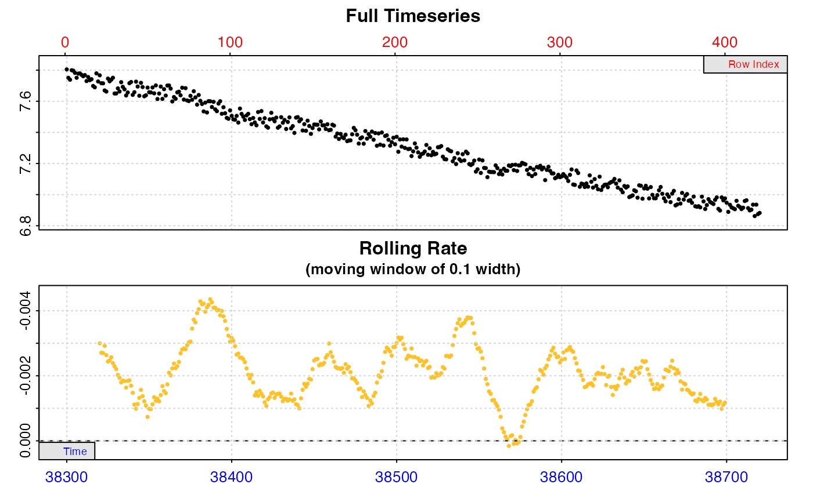
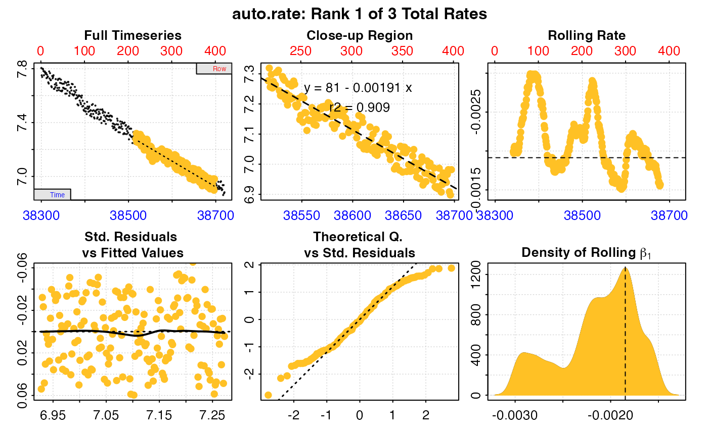
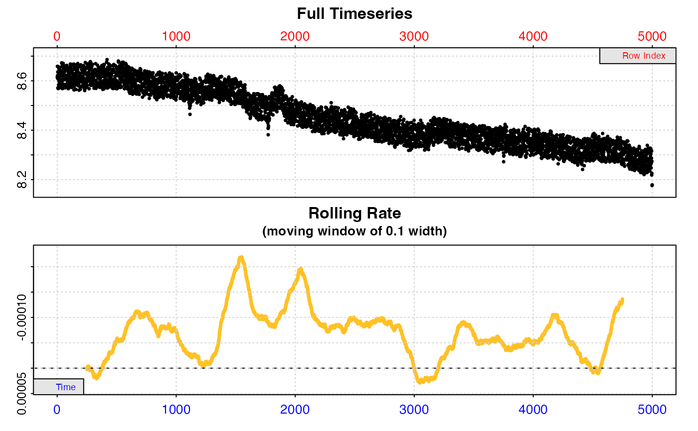
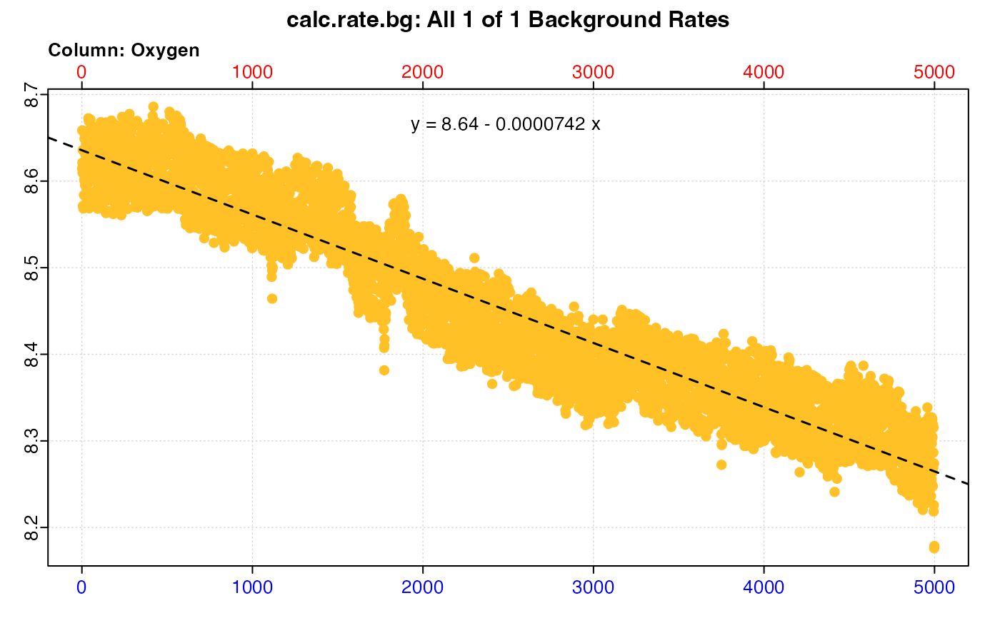
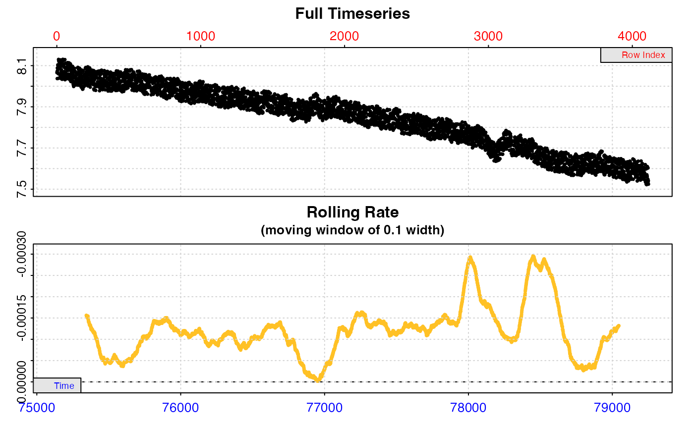
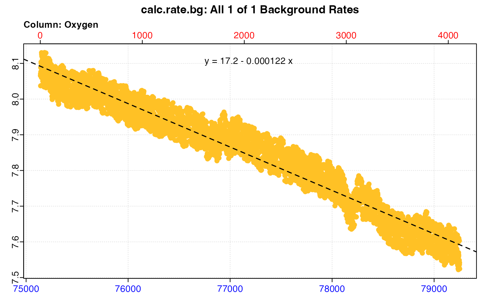

R/adjust_rate.R
adjust_rate.RdThe adjust_rate function adjusts oxygen uptake or production rates (for
example, as determined in calc_rate() or auto_rate()) for background
oxygen use by microbial organisms, or for other removal or input of oxygen
during a respirometry experiment. The function accepts numeric values, as
well as regular respR objects, and data frames. See calc_rate.bg() for
determining background rates, which is the recommended way of passing
background rates to adjust_rate. Rates determined in calc_rate are also
accepted as background rates.
adjust_rate(
x,
by,
method = NULL,
by2 = NULL,
time_x = NULL,
time_by = NULL,
time_by2 = NULL
)numeric. A single numeric value, numeric vector, or object of class
calc_rate, calc_rate.int, auto_rate, or auto_rate.int. This
contains the experimental rate value(s) to be adjusted.
numeric. A single numeric value, numeric vector, or object of class
calc_rate.bg or calc_rate. This is the background rate(s) used to
perform the adjustment to x. Can also be a data.frame or inspect
object for "concurrent", "linear" or "exponential" adjustments. See
Details.
string. Method of background adjustment. Defaults to "mean".
Other inputs are: "value", "paired", "concurrent", "linear",
"exponential". See Details.
numeric. Either a single numeric value, a calc_rate.bg or
calc_rate object, a data.frame, or inspect object. This is the source
of the second background adjustment rate, and used only for dynamic
adjustments ("linear" or "exponential"). See Details.
numeric. The timestamp(s) for the rate(s) in x, if it was
entered as a numeric (otherwise it is extracted from the x input object).
Generally this is the midpoint of the time range over which each x rate
was calculated. Used only in dynamic adjustments ("linear" or
"exponential"). See Details.
numeric. The timestamp of the background correction rate in
by, if it was entered as a numeric (otherwise it is extracted from the
by input object). Generally the midpoint of the time range over which it
was calculated. Used only in dynamic adjustments ("linear" or
"exponential"). See Details.
numeric. The timestamp of the background correction rate in
by2, if it was entered as a numeric (otherwise it is extracted from the
by2 input object). Generally the midpoint of the time range over which it
was calculated. Used only in dynamic adjustments ("linear" or
"exponential"). See Details.
Output is a list object of class adjust_rate containing all inputs,
input rates, adjustment values, adjustment method and model (if relevant),
and the primary output of interest $rate.adjusted.
adjust_rate allows the rate, or multiple rates, in x to be adjusted in a
number of ways, as detailed below. Note that for those methods which accept
them, by and by2 inputs of class calc_rate, calc_rate.bg,
data.frame or inspect can contain multiple columns of background oxygen
data, as long as they share the same numeric time data in column 1. In this
case, the mean of all rates calculated for all oxygen columns is used to
perform adjustments (see inspect() and calc_rate.bg() to coerce data
to this form). The exception to this is the "paired" method, where each
rate in by (i.e. rate in each oxygen column) is paired with the rate at the
same position in x and used to adjust it.
Note: take special care with the sign of the rate used for
adjustments. In respR oxygen uptake rates are negative, as they represent a
negative slope of oxygen against time. Background rates will normally also be
a negative value, while any input of oxygen would be positive. See Examples.
Methods
There are six methods of adjustment, briefly summarised here, with more detail below:
"value" - All experimental rates in x are adjusted by a single background
rate value in by.
"mean" - This is the default method. All experimental rates in x are
adjusted by the mean of all background rate values in by.
"paired" - Experimental rates in x are adjusted by the background rate
value at the same position in by. Therefore requires x and by to have
the same number of rates.
"concurrent" - Experimental rates in x are adjusted by a background rate
calculated over the same time window in the data in by. Therefore requires
x and by to share the same time data and length (broadly speaking).
"linear" - The time values for experimental rates in x are used to
calculate an adjustment value based on a background rate that changes
linearly with respect to time over the course of an experiment. Requires
two background recordings or values (by, by2), and that all data share
the same time data or scale.
"exponential" - The time values for experimental rates in x are used to
calculate an adjustment value based on a background rate that changes
exponentially with respect to time over the course of an experiment.
Requires two background recordings or values (by, by2), and that all data
share the same time data or scale.
More Detail
"value" - For experiments in which the rate from a single background
experiment (or any single background value) is being used to adjust one or
more specimen rates. Each rate in x is adjusted by the subtracting the
single value in by. x can be a numeric value, numeric vector,
calc_rate, calc_rate.int, auto_rate, or auto_rate.int object. by
can be a single numeric value, a calc_rate.bg object containing a single
$rate.bg (i.e. calculated from a 2-column data frame of time~oxygen), or a
calc_rate object containing a single $rate. All other inputs should be
NULL.
"mean" - For experiments in which the mean rate from multiple background
experiments is being used to adjust one or more specimen rates. Each rate in
x is adjusted by subtracting the mean of all background rates in by.
x can be a numeric value, numeric vector, calc_rate, calc_rate.int,
auto_rate, or auto_rate.int object. by can be a numeric value, numeric
vector, calc_rate.bg object containing multiple $rate.bg, or a
calc_rate object containing multiple $rate. All other inputs should be
NULL. If by is a single value, this will obviously have the same output
as the "value" method.
"paired" - For experiments where multiple specimen experiments are being
adjusted by multiple different background rates. This is a vectorised
adjustment operation: rates in x are adjusted by the background rates at
the same position in by. That is, the first x adjusted by the first by,
second x by second by, etc. x can be a numeric value, numeric vector,
calc_rate, calc_rate.int, auto_rate, or auto_rate.int object. by
can be a numeric vector of the same length, a calc_rate.bg or calc_rate
object where the $rate.bg or $rate element is the same length as the
rates in x to be adjusted. All other inputs should be NULL.
"concurrent" - For experiments in which one or more concurrent "blanks" or
background experiments are run alongside specimen experiments. Rates in x
are adjusted by a background rate calculated over the same time window in the
data in by. That is, the start and end time of each x rate is used to fit
a linear regression and calculate a background rate in the $dataframe in
by. x must be an calc_rate, calc_rate.int, auto_rate, or
auto_rate.int object. by must be a data.frame, inspect,
calc_rate.bg, or calc_rate object containing time~oxygen data. If there
are multiple columns of background oxygen the mean rate across the same time
window in all columns is used. In calc_rate.bg and calc_rate objects the
$rate.bg or $rate element is not used, only the $dataframe. The x and
by data must share (broadly) the same time data or scale in the same
units. If the x and by data differ in length by more than 5% or some
time values are not shared between the two datasets, a warning is given, but
the adjustment is nevertheless performed using the available data, by using
the closest matching time window in the background data.
"linear" - This is a dynamic adjustment, intended for experiments in which
the background oxygen rate changes over the course of the experiment
linearly with respect to time. This is typical of long duration
respirometry experiments in high temperatures, where a "blank" is conducted
at the start of the experiment before the specimen is put in, and again at
the end after it is taken out. It requires therefore two background
recordings sharing the same numeric time data or time scale, in the same
units as the experiment to be adjusted. These can also be entered as two rate
values with associated timestamps, which again must share the same time
scale and units as the rate to be adjusted. This method can also be used in
experiments in which a concurrent blank experiment is conducted alongside
specimen experiments (as described in the concurrent method above), but in
which the background data is deemed too noisy to fit reliable regressions
over the short timescales specimen rates are determined. In this case, any
two reliable segments of the background data of any duration can be used to
determine how the background rate changes over the course of the experiment,
and then this used to adjust specimen rates using the appropriate rate
timestamps. The time~background rate linear relationship is calculated
using the midpoint of the time range of the by and by2 rate regressions
(or values plus timestamps). The adjustments to x rates are calculated by
taking the midpoint of the time range over which it was determined and
applying it to the by~by2 linear relationship. The x input can be a
numeric value, numeric vector, or a calc_rate, calc_rate.int,
auto_rate, or auto_rate.int object containing single or multiple rates.
The by input is the first background recording or rate value, and by2 the
second background recording or rate value.
While it is typical, the x rates do not necessarily need to be at
intermediate timepoints to the by/by2 times. these are used only to
establish a time~background rate linear relationship, which can be
extrapolated before or after the time values used to calculate it. The by
and by2 inputs can be a data.frame, inspect or calc_rate.bg object
containing background time~oxygen data. Alternatively, the rate x, and
background rates by and by2 can be entered as values, in which case the
associated timepoints at which these were determined (generally the midpoint
of the time range over which the linear regression was fit) must be entered
as time_x, time_by, and time_by2 (these timepoints are otherwise
automatically extracted from the input objects). Multiple x rates with
multiple time_x timepoints can be entered and adjusted, but only one linear
background rate relationship applied, that is by, by2, time_by, and
time_by2 must be single numeric values in the correct units.
"exponential" - This is a dynamic adjustment, intended for experiments in
which the background oxygen rate changes over the course of the experiment
exponentially with respect to time. This is typical of long duration
respirometry experiments in high temperatures, where a "blank" is conducted
at the start of the experiment before the specimen is put in, and again at
the end after it is taken out, and the background rate is found to increase
exponentially. This is identical to the "linear" method (see above for
requirements), except the adjustment is calculated as an exponential
relationship of the form - lm(log(c(by, by2)) ~ c(time_by, time_by2)).
Saved output objects can be used in the generic S3 functions print(),
summary(), and mean().
print(): prints a single result, by default the first adjusted rate.
Others can be printed by passing the pos input. e.g. print(x, pos = 2)
summary(): prints summary table of all results and metadata, or those
specified by the pos input. e.g. summary(x, pos = 1:5). The summary can
be exported as a separate dataframe by passing export = TRUE.
mean(): calculates the mean of all adjusted rates, or those specified by
the pos input. e.g. mean(x, pos = 1:5) The mean can be exported as a
separate value by passing export = TRUE.
For additional help, documentation, vignettes, and more visit the respR
website at https://januarharianto.github.io/respR/
# \donttest{
# Note that oxygen uptake rates are negative in respR since they represent a
# decrease in dissolved oxygen and negative slope. Typically both
# specimen rate and background rate values are negative.
# Simple background adjustment to a single rate
# This is (-7.44) - (-0.04) = -7.40
adjust_rate(x = -7.44, by = -0.04, method = "value")
#> adjust_rate: Rate adjustments applied using "value" method.
#>
#> # print.adjust_rate # -------------------
#> NOTE: Consider the sign of the adjustment value when adjusting the rate.
#>
#> Adjustment was applied using the 'value' method.
#>
#> Rank 1 of 1 adjusted rate(s):
#> Rate : -7.44
#> Adjustment : -0.04
#> Adjusted Rate : -7.4
#>
#> To see full results use summary().
#> -----------------------------------------
# Oxygen input adjustment
# This is (-7.44) - (0.1) = -7.54
adjust_rate(x = -7.44, by = 0.1, method = "value")
#> adjust_rate: Rate adjustments applied using "value" method.
#>
#> # print.adjust_rate # -------------------
#> NOTE: Consider the sign of the adjustment value when adjusting the rate.
#>
#> Adjustment was applied using the 'value' method.
#>
#> Rank 1 of 1 adjusted rate(s):
#> Rate : -7.44
#> Adjustment : 0.1
#> Adjusted Rate : -7.54
#>
#> To see full results use summary().
#> -----------------------------------------
# Mean background respiration correction to a single rate.
adjust_rate(x = -7.44, by = c(-0.04, -0.05, -0.06),
method = "mean")
#> adjust_rate: The 'by' input contains multiple background rates. The mean value will be used to perform adjustments.
#> adjust_rate: Rate adjustments applied using "mean" method.
#>
#> # print.adjust_rate # -------------------
#> NOTE: Consider the sign of the adjustment value when adjusting the rate.
#>
#> Adjustment was applied using the 'mean' method.
#>
#> Rank 1 of 1 adjusted rate(s):
#> Rate : -7.44
#> Adjustment : -0.05
#> Adjusted Rate : -7.39
#>
#> To see full results use summary().
#> -----------------------------------------
# Mean background respiration correction to multiple rates.
out <- adjust_rate(x = c(-7.44, -7.20, -7.67),
by = c(-0.04, -0.05, -0.06),
method = "mean")
#> adjust_rate: The 'by' input contains multiple background rates. The mean value will be used to perform adjustments.
#> adjust_rate: Rate adjustments applied using "mean" method.
summary(out)
#>
#> # summary.adjust_rate # -----------------
#>
#> Adjustment was applied using 'mean' method.
#> Summary of all rate results:
#>
#> rank rate adjustment rate.adjusted
#> 1: 1 -7.44 -0.05 -7.39
#> 2: 2 -7.20 -0.05 -7.15
#> 3: 3 -7.67 -0.05 -7.62
#> -----------------------------------------
# Paired background respiration correction to multiple rates.
out <- adjust_rate(x = c(-7.44, -7.20, -7.67),
by = c(-0.04, -0.05, -0.06),
method = "paired")
#> adjust_rate: Rate adjustments applied using "paired" method.
summary(out)
#>
#> # summary.adjust_rate # -----------------
#>
#> Adjustment was applied using 'paired' method.
#> Summary of all rate results:
#>
#> rank rate adjustment rate.adjusted
#> 1: 1 -7.44 -0.04 -7.40
#> 2: 2 -7.20 -0.05 -7.15
#> 3: 3 -7.67 -0.06 -7.61
#> -----------------------------------------
# Dynamic linear adjustment
# With a linear relationship between the 'by' and 'by2' rates,
# at the midpoint time value the adjustment to 'x' should be -0.5
adjust_rate(x = -10,
time_x = 500,
by = 0, by2 = -1,
time_by = 0, time_by2 = 1000,
method = "linear")
#> adjust_rate: Rate adjustments applied using "linear" method.
#>
#> # print.adjust_rate # -------------------
#> NOTE: Consider the sign of the adjustment value when adjusting the rate.
#>
#> Adjustment was applied using the 'linear' method.
#>
#> Rank 1 of 1 adjusted rate(s):
#> Rate : -10
#> Adjustment : -0.5
#> Adjusted Rate : -9.5
#>
#> To see full results use summary().
#> -----------------------------------------
# Same operation to multiple rates
out <- adjust_rate(x = c(-10, -11, -12),
time_x = c(500, 600, 700),
by = 0, by2 = -1,
time_by = 0, time_by2 = 1000,
method = "linear")
#> adjust_rate: Rate adjustments applied using "linear" method.
summary(out)
#>
#> # summary.adjust_rate # -----------------
#>
#> Adjustment was applied using 'linear' method.
#> Summary of all rate results:
#>
#> rank rate adjustment rate.adjusted
#> 1: 1 -10 -0.5 -9.5
#> 2: 2 -11 -0.6 -10.4
#> 3: 3 -12 -0.7 -11.3
#> -----------------------------------------
# A complete workflow using objects instead of values.
# Extract a single replicate from the middle of the zebrafish data
# and calculate rates
zeb_rate <- subset_data(zeb_intermittent.rd,
from = 38300,
to = 38720,
by = "time") %>%
inspect() %>%
auto_rate()
#> inspect: Applying column default of 'time = 1'
#> inspect: Applying column default of 'oxygen = 2'
#> inspect: No issues detected while inspecting data frame.
#>
#> # print.inspect # -----------------------
#> Time Oxygen
#> numeric pass pass
#> Inf/-Inf pass pass
#> NA/NaN pass pass
#> sequential pass -
#> duplicated pass -
#> evenly-spaced pass -
#>
#> -----------------------------------------
#> auto_rate: Applying default 'width' of 0.2


# Calculate background rate at start of experiment
bg_start <- subset_data(zeb_intermittent.rd, 1, 4999, "time") %>%
inspect() %>%
calc_rate.bg() %>%
print()
#> inspect: Applying column default of 'time = 1'
#> inspect: Applying column default of 'oxygen = 2'
#> inspect: No issues detected while inspecting data frame.
#>
#> # print.inspect # -----------------------
#> Time Oxygen
#> numeric pass pass
#> Inf/-Inf pass pass
#> NA/NaN pass pass
#> sequential pass -
#> duplicated pass -
#> evenly-spaced pass -
#>
#> -----------------------------------------
#> calc_rate.bg: Applying column default of 'time = 1'
#> calc_rate.bg: Applying column default of all non-time column(s) as 'oxygen'

#>
#> # plot.calc_rate.bg # -------------------

#> plot.calc_rate.bg: Plotting all 1 background rates ...
#> -----------------------------------------
#>
#> # print.calc_rate.bg # ------------------
#> Background rate(s):
#> [1] -0.00007417108
#> Mean background rate:
#> [1] -0.00007417108
#> -----------------------------------------
# Calculate background rate at end of experiment
bg_end <- subset_data(zeb_intermittent.rd, 75140, 79251, "time") %>%
inspect() %>%
calc_rate.bg() %>%
print()
#> inspect: Applying column default of 'time = 1'
#> inspect: Applying column default of 'oxygen = 2'
#> inspect: No issues detected while inspecting data frame.
#>
#> # print.inspect # -----------------------
#> Time Oxygen
#> numeric pass pass
#> Inf/-Inf pass pass
#> NA/NaN pass pass
#> sequential pass -
#> duplicated pass -
#> evenly-spaced pass -
#>
#> -----------------------------------------
#> calc_rate.bg: Applying column default of 'time = 1'
#> calc_rate.bg: Applying column default of all non-time column(s) as 'oxygen'

#>
#> # plot.calc_rate.bg # -------------------

#> plot.calc_rate.bg: Plotting all 1 background rates ...
#> -----------------------------------------
#>
#> # print.calc_rate.bg # ------------------
#> Background rate(s):
#> [1] -0.0001216593
#> Mean background rate:
#> [1] -0.0001216593
#> -----------------------------------------
# Perform a dynamic linear adjustment
adjust_rate(zeb_rate, by = bg_start, by2 = bg_end,
method = "linear") %>%
summary()
#> adjust_rate: Rate adjustments applied using "linear" method.
#>
#> # summary.adjust_rate # -----------------
#>
#> Adjustment was applied using 'linear' method.
#> Summary of all rate results:
#>
#> rep rank intercept_b0 slope_b1 rsq density row endrow time endtime oxy endoxy rate adjustment rate.adjusted
#> 1: NA 1 80.99546 -0.001914038 0.909 1263.6742 218 398 38517 38697 7.276907 6.981903 -0.001914038 -0.00009712636 -0.001816912
#> 2: NA 2 90.75258 -0.002166859 0.978 967.3665 4 375 38303 38674 7.799663 6.968113 -0.002166859 -0.00009705102 -0.002069808
#> 3: NA 3 119.55548 -0.002917213 0.823 420.6539 47 132 38346 38431 7.691533 7.461897 -0.002917213 -0.00009698745 -0.002820226
#> -----------------------------------------
# Note the adjustment values applied are somewhere between the
# start and end background rate values
# }